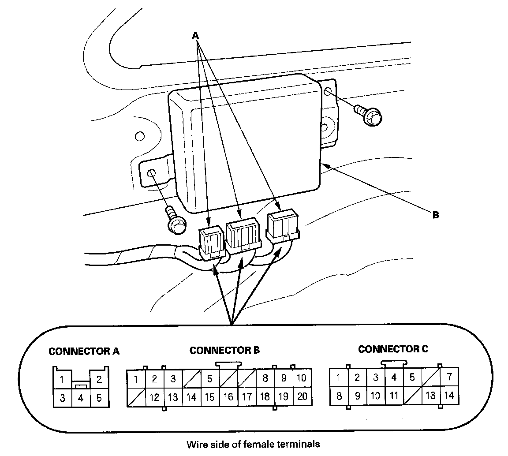
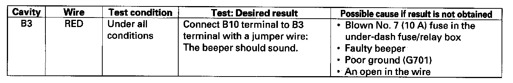
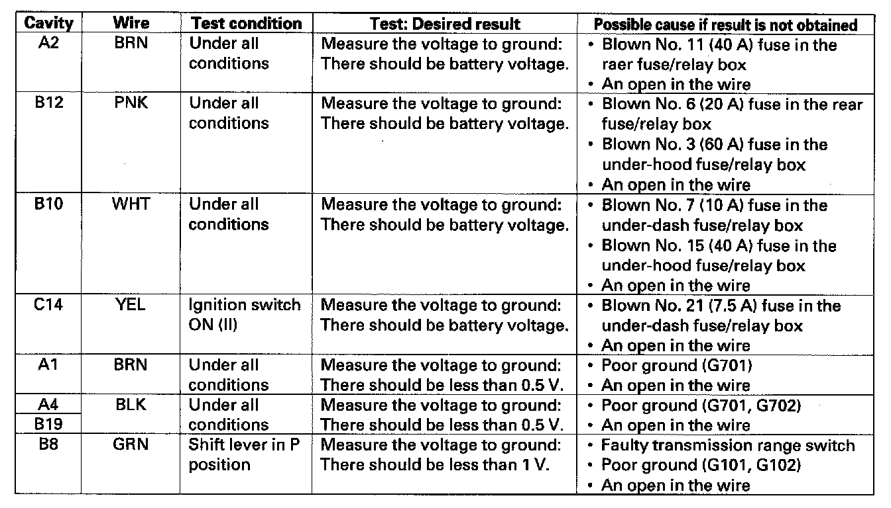

Control Unit Input Test
Control Unit Input TestNOTE: Before testing, troubleshoot the multiplex integrated control system using B-CAN System Diagnosis Test Mode A.
1. Turn the ignition switch OFF.
2. Remove the left rear pillar trim.

3. Disconnect the 20P, 14P, and 5P connectors (A) from the power tailgate control unit (B).
4. Inspect all the connector and socket terminals to be sure they are all making good contact.
- If the terminals are bent, loose or corroded, repair them as necessary, and recheck the system.
- If the terminals look OK, go to step 5.

5. With the connectors still disconnected, make these input tests at the connectors.
- If any test indicates a problem, find and correct the cause, then recheck the system.
- If the input tests prove OK, go to step 5.

6. Reconnect all connectors to the power tailgate control unit, and make these input tests at the appropriate connector.
- If the test indicates a problem, find and correct the cause, then recheck the system.
- If the input test proves OK, replace the power tailgate control unit.